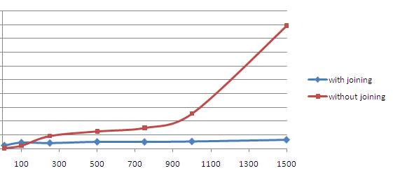

Joining Support For Performance¶
응용 스키마 접합(joining)은 응용 스키마가 Feature Chaining을 또 다른 방법으로 실행하도록 하는 선택적인 설정 파라미터입니다. 많은 경우 DBMS에 전송되는 SQL 쿼리의 수를 줄여 속도를 꽤 향상시킬 수 있습니다.
Conditions¶
응용 스키마 접합을 사용하려면 다음 설정 조건을 충족해야 합니다.
- 사용하는 모든 피처 매핑을 JDBC 데이터 저장소에 매핑해야 합니다.
- 서로 연쇄되어 있는 모든 피처 매핑을 동일한 물리적 데이터베이스에 매핑해야 합니다.
- 매핑 작업 시 상위(parent) 피처의 참조하는(referencing) 항목은 물론 내포 피처의 (FEATURE_LINK 같은) 참조되는(referenced) 항목 양쪽의 <SourceExpression>에 설정된 CQL 연산식에 대한 제한 사항들이 있습니다. 필터 역량이 해당 연삭식에 사용되는 모든 연산자 및 함수를 지원해야 합니다. 예를 들어 GeoTools는 모든 연산자 및 함수를 SQL 코드로 바로 번역할 수 있어야 합니다. 각 DBMS에 따라 다르긴 해도 일반적인 규칙으로서 비교 연산자, 논리 연산자, 산술 연산자를 모두 지원하지만 함수를 모두 지원하지는 않는다고 가정할 수 있습니다. 피처 연쇄 처리에 단순한 항목 명칭을 사용하면 언제나 잘 작동합니다.
접합을 활성화할 때 이 3가지 제한 사항을 따르지 못 하면 실행 시간에 예외가 발생하게 됩니다.
접합을 활성화하고 응용 스키마를 사용할 경우, 일반적인 동작에 관련한 다음 제한 사항이 존재합니다.
- 필터 안에 설정된 XPath는 참조된 피처의 처리를 지원하지 않습니다. (Multi-valued properties by reference (xlink:href)를 참조하십시오.) 참조된 피처를 실제로 내포된 피처인 것처럼 다루기 때문입니다. 예를 들어 XPath 표준에 따르면 WFS가 생산한 실제 XML 코드를 대상으로 값을 구할 경우에만 XPath의 값을 구할 수 있습니다.
Configuration¶
기본적으로 접합은 활성화되어 있습니다. 사용자의 app-schema.properties 파일에 다음과 같은 간단한 한 줄을 추가해서 접합을 비활성화할 수 있습니다. (Property Interpolation를 참조하십시오.)
app-schema.joining = false
혹은 다른 방법으로, Java 시스템 속성 app-schema.joining의 값을 다음과 같이 “false”로 설정하면 됩니다.
java -DGEOSERVER_DATA_DIR=... -Dapp-schema.joining=false Start
app-schema.joining 파라미터를 설정하지 않으면 기본적으로 접합을 활성화할 것입니다.
Database Design Guidelines¶
- 빠르고 신속한(fast on-the-fly) 접합 및 정렬을 위해 데이터베이스를 최적화해야 합니다.
- 사용하는 모든 항목에 식별자로 인덱스를 부여해야 합니다. 피처 연쇄 처리의 경우 유일한 인덱스를 사용할 수 있습니다. 인덱스가 없으면 데이터가 틀린 순서로 코드화되거나, 피처 연쇄 처리의 경우 오류가 있는 산출물을 생산할 수도 있습니다.
- 사용자 피처를 가급적이면 정규화된 테이블에 매핑하십시오.
- 피처 연쇄 처리를 정규(regular) 일 대 다수(one-to-many) 관계에 적용할 것을 추천합니다. 예를 들어 연쇄 처리에 사용된 항목 가운데 하나에 정의된 유일한 제약 사항이 있어야 하며, 가능하다면 다른 항목에 정의된 외부 키(foreign key) 제약 사항도 있으면 좋습니다.
Effects on Performance¶
일정 개수의 피처를 대상으로 접합을 사용하고 사용하지 않는 설정의 응답 시간의 전형적인 곡선은 다음과 같습니다.
기본 실행에서 생산된 피처의 개수에 따라 응답 시간이 빠르게 증가합니다. 각 피처 별로 DBMS에 다중 SQL 요청을 전송해서 피처 연쇄 처리를 실행하기 때문에, 생산된 피처의 개수에 따라 요청의 개수도 증가하기 때문입니다. 접합을 활성화하면 피처 개수에 상관없이 응답 시간이 거의 일정합니다. 이 경우 생산된 피처의 개수에 상관없이 적은 개수의 대용량 쿼리를 DBMS에 전송해서 피처 연쇄 처리를 실행하기 때문입니다. 요약하자면 요청한 피처의 개수가 많아질수록 속도의 차이가 심해집니다. 접합의 일반적인 속도는 데이터베이스와 매핑 설계(앞의 내용 참조), 데이터베이스 용량에 따라 달라집니다.
많은 개수의 피처를 생산해야 하는 경우, 예를 들어 WMS로 맵을 생산하는 경우 접합을 사용할 것을 강력히 추천합니다. (WMS Support를 참조하십시오.)
데이터베이스의 성능을 최적화하면 용량이 작은 쿼리를 포함하여 접합 사용의 효용을 극대화할 것입니다.